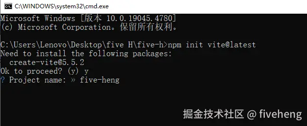
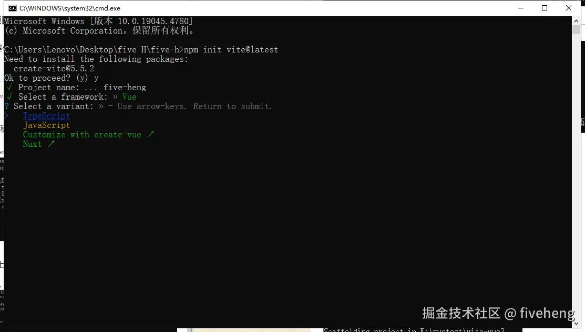
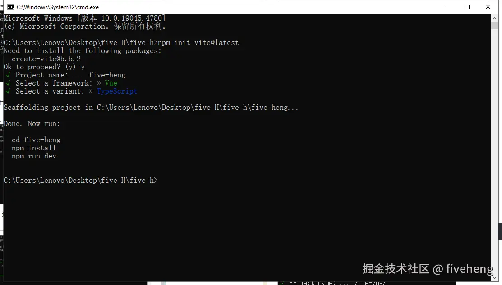
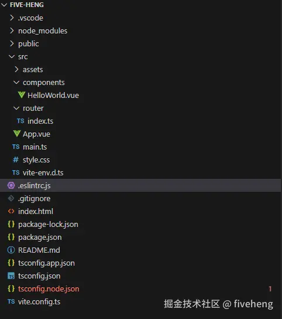

- 14 ESLint 现已支持检查 JSON 和 Markdown
- 13 如何使用 Vike 和 Vite 构建可扩展的微前端
- 12 使用 Axios 配置动态域名的基础 URL 和项目打包
- 11 vite 创建 vue3 项目
- 10 vite插件开发,项目版本号自增,自动压缩构建产物上传oss
- 09 使用 eslint-plugin-depend 移除无用的 NPM 包
- 08 检查前端项目和 node 项目中未被使用的依赖包
- 07 最新 ESLint 9.0 + vue3.0 + TS 配置
- 06 前端版本管理工具 - volta
- 05 前端构建系统浅析
- 04 vite 配置
- 03 Eslint 配置指南
- 02 Eslint 和 Prettier 的配置与冲突处理
- 01 ESLint 忽略检查行和文件总结
vite 创建 vue3 项目 (vue3+vue-router+ts+vite+element-plus+pinia)
1. vite 创建 vue3 项目
vite 是一个基于 Vue3 单文件组件的非打包开发服务器，它做到了本地快速开发启动
优点
- 快速的冷启动，不需要等待打包操作；
- 即时的热模块更新，替换性能和模块数量的解耦让更新飞起；
- 真正的按需编译，不再等待整个应用编译完成，这是一个巨大的改变。（平均一秒 run）
2. 初始化项目
(1) 在需要创建位置 cmd 目录下执行
npm init vite@latest
(2) 输入项目名称
(3) 选择 vue（上下键选择，回车确认）

(4) 选择语言，选 TypeScript
(5) 此时创建完毕
3. 安装依赖
可直接根据上图提示执行操作
(1) 进入刚刚创建的文件目录
cd five-heng
(2) 安装默认依赖
此处切换 npm 源，安装更快
npm config set registry https://registry.npmmirror.com
然后开始安装
npm install
(3) 运行项目
npm run dev
4. 初始配置
- 配置所需依赖:
npm install @types/node --save-dev
- 修改 vite.config.ts 配置文件代码:
import { defineConfig } from "vite";
import vue from "@vitejs/plugin-vue";
import { resolve } from "path";
export default defineConfig({
plugins: [vue()],
//解决“vite use `--host` to expose”
base: "./",
server: {
host: "0.0.0.0",
// port: 8080,
open: true,
},
resolve: {
//别名配置，引用src路径下的东西可以通过@如：import Layout from '@/layout/index.vue'
alias: [
{
find: "@",
replacement: resolve(__dirname, "src"),
},
],
},
});
5. 安装路由
npm install vue-router@4
- 在 src 目录下新建 router 文件夹，在 router 里创建 index.ts 文件
- index.ts 中配置路由 下面 @ 引入方式会报错，原因是还没配置，后面第 7 步会配置，此处错误可以先不管。
import { createRouter, createWebHistory, RouteRecordRaw } from "vue-router";
// import Layout from '../components/HelloWorld.vue'
const routes: Array<RouteRecordRaw> = [
{
//路由初始指向
path: "/",
name: "HelloWorld",
component: () => import("../components/HelloWorld.vue"),
},
];
const router = createRouter({
history: createWebHistory(),
routes,
});
export default router;
- main.ts 中导入挂载路由
import { createApp } from "vue";
import "./style.css";
import App from "./App.vue";
import router from "./router";
const app = createApp(App);
app.use(router).mount("#app");
- 修改 App.vue 管理路由
<script setup lang="ts"></script>
<template>
<router-view></router-view>
</template>
<style></style>
- 可以保存后，运行看是否报错。如图打开了路由指向的 HelloWorld.vue 页面的内容就对了

配置 ts 文件采用 @ 方式导入
在 tsconfig.json 文件中添加配置（下图打注释的都是添加的，也可自己丰富） 配置完成后建议重新 run 一下
{
"compilerOptions": {
"target": "esnext",
"useDefineForClassFields": true,
"module": "esnext",
"moduleResolution": "node",
"strict": true,
"jsx": "preserve",
"sourceMap": true,
"resolveJsonModule": true,
"isolatedModules": true,
"esModuleInterop": true,
"lib": ["esnext", "dom"],
"skipLibCheck": true,
//添加---
"suppressImplicitAnyIndexErrors": true, //允许字符串用作下标
"ignoreDeprecations": "5.0", //高版本上句报错，此句解决。如此句报错可注释掉
"baseUrl": ".",
"paths": {
"@/*": ["src/*"]
}
//---------
},
"include": ["src/**/*.ts", "src/**/*.d.ts", "src/**/*.tsx", "src/**/*.vue"],
"references": [{ "path": "./tsconfig.node.json" }],
//添加
"exclude": ["node_modules"] // // ts排除的文件
}
7. 安装代码检测工具（建议） 为了保证代码质量，添加代码检测
npm install --save-dev eslint eslint-plugin-vue
(1) 在根目录创建 .eslintrc.js 文件
(2) 复制代码
module.exports = {
root: true,
parserOptions: {
sourceType: "module",
},
parser: "vue-eslint-parser",
extends: [
"plugin:vue/vue3-essential",
"plugin:vue/vue3-strongly-recommended",
"plugin:vue/vue3-recommended",
],
env: {
browser: true,
node: true,
es6: true,
},
rules: {
"no-console": "off",
"comma-dangle": [2, "never"], //禁止使用拖尾逗号
},
};
8. css 预处理器 sass
npm install -D sass sass-loader
<style scoped lang="scss">
.read-the-docs {
color: #888;
}
</style>
9. 引入 element-plus
(1) element-plus 是 vue3 目前大流行组件库，用法基本和 element ui 一样
npm install element-plus --save
npm install @element-plus/icons-vue // 图标
main.ts 中引入
import { createApp } from "vue";
import "./style.css";
import App from "./App.vue";
import router from "./router";
import ElementPlus from "element-plus";
import "element-plus/dist/index.css";
import * as ElementPlusIconsVue from "@element-plus/icons-vue";
import zhCn from "element-plus/lib/locale/lang/zh-cn"; //国际化
const app = createApp(App);
app.use(ElementPlus, { locale: zhCn }).use(router).mount("#app");
//全局注册图标组件
for (const [key, component] of Object.entries(ElementPlusIconsVue)) {
app.component(key, component);
}
- 问题
- 国际化时如果安装了 ^2.3.8 上的高版本或找不到包，解决方法： 需要在 vite-env.d.ts 加入
declare module "element-plus/dist/locale/zh-cn.mjs"
main.ts 中
import zhCn from "element-plus/dist/locale/zh-cn.mjs";
- 若仍然有问题，修改为如下引用
import zhCn from "element-plus/es/locale/lang/zh-cn"
(2) 使用 element plus 组件
<template>
<el-button type="primary" size="default" :icon="Plus">新增</el-button>
</template>
<script setup lang="ts">
import { Plus } from "@element-plus/icons-vue";
</script>
<style scoped lang="scss"></style>
10. 安装 pinia（状态管理，类似 vue2 中的 vuex）
npm install pinia
全局引入 pinia
import { createApp } from "vue";
import "./style.css";
import App from "./App.vue";
import router from "./router";
import ElementPlus from "element-plus";
import "element-plus/dist/index.css";
import * as ElementPlusIconsVue from "@element-plus/icons-vue";
import zhCn from "element-plus/dist/locale/zh-cn.mjs"; //国际化
import { createPinia } from "pinia";
const app = createApp(App);
// 实例化 Pinia
const pinia = createPinia();
app.use(ElementPlus, { locale: zhCn }).use(router).use(pinia).mount("#app");
//全局注册图标组件
for (const [key, component] of Object.entries(ElementPlusIconsVue)) {
app.component(key, component);
}
开发提示：
- 上面代码引用了默认的 style.css 文件（引用位置 main.ts 中），可能里面样式对我们开发有干扰，可自行处理修改 style.css 默认样式。建议：全删除，自己设置 html，body，#app 样式。以下参考可自行发挥：
* {
margin: 0;
padding: 0;
}
html,
body,
#app {
width: 100%;
height: 100%;
}
- 路径在 src 下的可以用 @ 符号引用
import SysDialog from '@/components/SysDialog.vue';